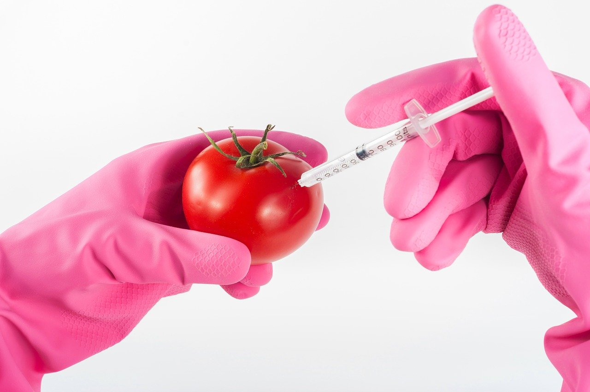

The value of money
The time value of money (TVM) is the concept that money you have now is worth more than the identical sum in the future due to its potential earning capacity. This core principle of finance holds that provided money can earn interest, any amount of money is worth more the sooner it is received The time value of money is the idea that there is greater benefit to receiving a sum of money now rather than an identical sum later. It is founded on time preference.
GMO
A 2015 survey by the Pew Research Center shows this divide. Nearly 9 out of 10 scientists from the American Association for the Advancement of Science say GMOs are "generally safe" to eat. Though if you're like more than half of U.S. adults from the general public in that same survey, you think you probably shouldn't eat them.Most GMOs have been engineered to withstand the direct application of herbicide and/or to produce an insecticide. However, new technologies are now being used to artificially develop other traits in plants.
World 2100

The Internet will be in your contact lens. Imagine blinking, and then instantly going on line, accessing your home office, or home entertainment system anywhere or anytime. We will be able to download any movie, song, Web site, or piece of information off the Internet directly onto our Internet-enabled contact lenses. These lenses will also be able to identify people’s faces, translate their comments and provide subtitles, so that we will always know exactly with whom we are speaking and what they are saying in any language. We will live in a cross between “The Matrix” and real life.